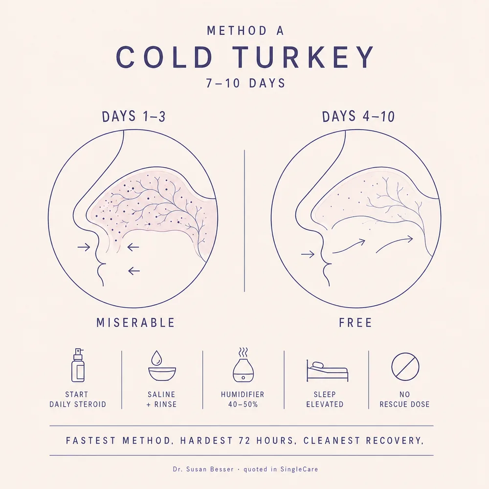
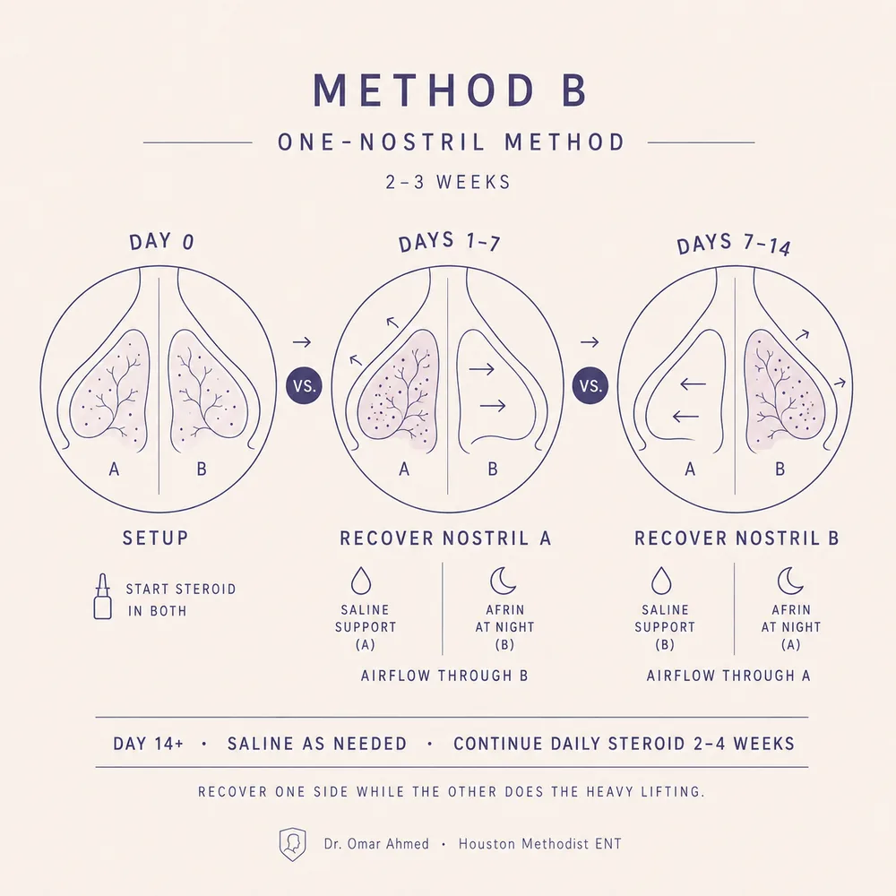
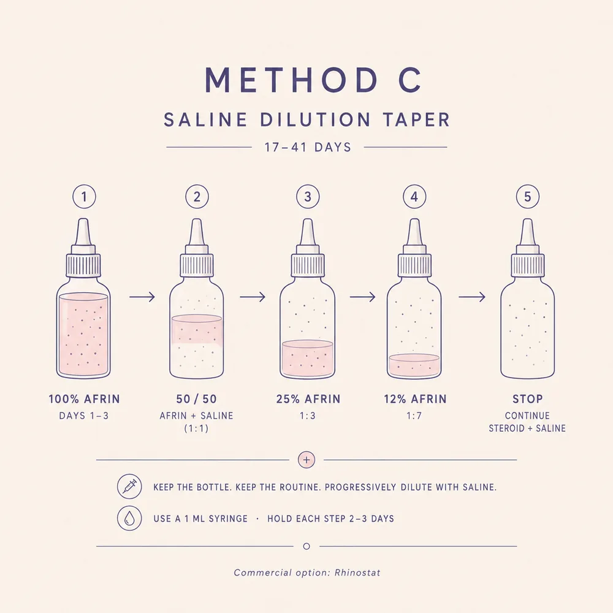

Home / Quit Playbook
How to quit Afrin: the playbook.
Three evidence-based methods. The steroid bridge that makes all three work. A decision tree to pick the right one. Built from published ENT protocols and what members of the 20,000-strong r/QuitAfrin community report worked for them.
How do you get off Afrin?
Stop the decongestant spray, either all at once, one nostril at a time, or by diluting it with saline. Start a daily steroid nasal spray such as fluticasone on the same day and use saline often. Expect the worst congestion on days 2–4 and steady improvement over the following 1–2 weeks. If you have used the spray for years or have failed before, see an ENT first.
Pick your method in 10 seconds
| Your situation | Method | Adjuncts |
|---|---|---|
| Less than 2 weeks of use | Cold turkey | Flonase + saline + humidifier |
| Months of use, motivated | One-nostril | Flonase + saline + 3-day Sudafed bridge |
| Years of use, failed quits | ENT visit first | Oral prednisone + Flonase + one-nostril |
| Can't sleep without it | ENT urgently | Possible prednisone + turbinate evaluation |
| Pregnant | OB consult | Saline + head elevation + humidifier |
| Just one cold, stuck | Cold turkey | 5–7 days of misery; full recovery in 2 weeks |
Method A · Cold turkey

For users under 4 weeks. Motivated. Has a weekend.
The fastest method. The hardest 72 hours. The cleanest recovery curve. You will be miserable for three days. Then you will be free.
The protocol
- Pick a Friday — or any day before a low-stakes stretch.
- Throw out every bottle in the house, car, bag, drawer.
- That morning, start an intranasal corticosteroid (Flonase 2 sprays per nostril, once daily).
- Saline spray every hour as needed, plus a daily neti pot or squeeze-bottle rinse.
- Run a humidifier at 40–50%.
- Sleep head-elevated (wedge pillow or stacked pillows, 30–45°).
- Optional bridges: 2–5 days of oral pseudoephedrine (real Sudafed, behind counter — watch BP); nasal strips at night.
- Do not rescue dose. One spray restarts the clock.
"The best way to break an Afrin addiction is to stop taking the medication cold turkey. Expect to be miserable for a few days while the body recovers."
Dr. Susan Besser · quoted in SingleCare
Method B · One-nostril method

The most popular method on Reddit and in ENT offices.
Your nose has a natural cycle that alternates which side does the heavy lifting. Recover one side while keeping the other on Afrin. Trade one week of partial blockage for a far more tolerable wean.
Setup (Day 0)
Pick the recovering nostril (usually the less blocked one). Start intranasal steroid in both nostrils, 1–2 sprays each, once daily. Buy saline spray + a NeilMed sinus rinse.
Days 1–7 · Recover nostril A
Afrin only in nostril B, at night. Saline in A every hour. Steroid in both nostrils once daily. Nostril A blocks for 3–4 days, then opens.
Days 7–14 · Recover nostril B
Once A is clear, stop Afrin entirely. Continue steroid + saline. Nostril B goes through its own 3–7 day rebound — but now you can breathe through A.
Day 14+ · Maintenance
Drop saline to as-needed. Continue daily steroid for 2–4 more weeks. If allergies are the underlying driver, keep the steroid going long-term.
"I give my patients a specific regimen to follow — use the spray at night and in just one nostril only. In the meantime, I have them start a nasal steroid spray and use a saline spray."
Dr. Omar Ahmed, Houston Methodist ENT
Method C · Saline dilution taper

For the spray-ritual-dependent. The chemist's method.
Keep the bottle. Keep the routine. Progressively water it down with saline until you're spraying salt water. Slowest, gentlest, and the only method that doesn't ask you to give up the gesture cold.
The schedule
| Days 1–3 | 100% Afrin |
| Days 4–5 | 50% Afrin + 50% saline (1:1) |
| Days 5–6 | 25% Afrin (1:3) |
| Day 7 | 12% Afrin (1:7) |
| Day 8+ | Stop completely; continue steroid + saline |
How to dilute
Use a 1 mL syringe. Refill the original Afrin bottle with saline at the target ratio. Shake. Spray at the same frequency you were before. Hold each step for 2–3 days. A slower variant cuts strength by 25% every few days over 2–3 weeks. Commercial version: Rhinostat, a patented OTC dilution device that does the same thing on a 17–41 day curve.
The steroid bridge · indispensable for every method
This is the single most important adjunct to all three methods. The intranasal corticosteroid resets your mucosa while the decongestant clears out. Without it, the day-3 wall is a relapse engine. With it, recovery accelerates dramatically.
| Drug | Brand | OTC? | Adult dose |
|---|---|---|---|
| Fluticasone propionate | Flonase | Yes | 2 sprays/nostril, once daily |
| Fluticasone furoate | Flonase Sensimist | Yes | 2 sprays/nostril, once daily |
| Mometasone | Nasonex | Yes | 2 sprays/nostril, once daily |
| Budesonide | Rhinocort | Yes | 1–2 sprays/nostril, once daily |
| Triamcinolone | Nasacort | Yes | 2 sprays/nostril, once daily |
| Azelastine + fluticasone | Dymista | Rx | 1 spray/nostril, twice daily |
Get the technique right
Hold the bottle in the opposite hand (left hand for right nostril). Aim at the lateral wall, never the septum. Gentle sniff. A bottle should last about 6 weeks. Most "Flonase didn't work" stories are technique errors.
Next: 10 things that help during withdrawal · how to stay off once you have quit · when to see an ENT